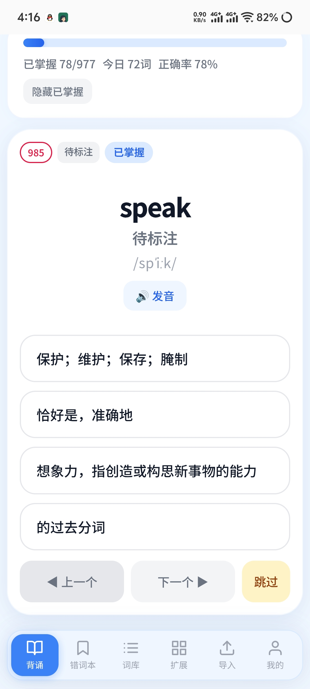

专为高考英语备考打造的高效词汇学习工具。覆盖3500大纲词汇、985核心词、真题高频词等12+词库，助你轻松突破词汇瓶颈。
不想装应用？两个网页版都能直接用，数据各自保存在浏览器本地
基于认知科学原理设计，让记忆更高效更持久
通过选择题和闪卡模式，强制大脑主动提取记忆，比被动阅读效率高3倍。答对自动标记掌握，答错自动加入错词本。
英文选中文 / 中文选英文 / 闪卡错词本自动收集答错的单词，配合温习功能定期回顾。今日学完一键温习，"温故而知新"，在遗忘临界点复习效果最佳。
错词本 / 温习功能每个单词配有精心编写的例句，在真实语境中理解单词用法。350+条例句经过全面优化，杜绝无意义和牵强的例句。
精编例句 / 自然语境背诵页自动展示关联词族，点击可跳转详情并自动发音。通过词根词缀理解构词规律，学会一个记住一串。
关联词族 / 词根词缀 / 举一反三视觉（大字体+彩色标签）、听觉（真人发音+听读模式循环播放+语速调节）、触觉（音量键翻页）三重感官协同，记忆留存率提升50%。
语音朗读 / 听读模式 / 音量键翻页打卡日历、连续天数、正确率、已掌握数量实时统计。看到自己的进步轨迹，学习动力源源不断。
打卡日历 / 连续天数 / 正确率统计覆盖高考英语全部核心词汇，持续更新完善
另可在线下载扩展词库：高考短语500、高考易错200、熟词生义150
163组词根词缀，掌握构词规律，批量记忆单词
高考高频前缀：return, remember, review, rebuild
高考高频前缀：predict, prepare, prefer, prevent
高考核心词根：inspect, respect, suspect, expect
高考高频词根：structure, instruct, construct, destroy
高考核心词根：transport, import, export, important
高考高频词根：predict, indicate, contradict, dictionary
高考高频词根：photograph, geography, program, paragraph
高考高频词根：object, subject, project, reject
高考核心词根：succeed, exceed, access, process, necessary
共163组词根词缀，涵盖前缀、后缀、感官词根、动词词根、自然词根等全类型
简洁直观的界面设计，专注学习无干扰
大字体显示单词，清晰标注词性和释义，选项简洁明了。支持隐藏已掌握单词，专注攻克难点。

五步科学学习法，从入门到精通
从12+词库中选择适合自己水平的词库。推荐从高考3500词或985核心词开始。
选择背诵模式（英文选中文/中文选英文/闪卡），每日设定目标（默认50词），坚持打卡。
答错的单词自动进入错词本，定期打开错词本针对性复习，消灭薄弱环节。
今日学完的单词，在首页一键温习。配合词根词缀和关联词族，深度理解记忆。
多次答对的单词标记为"已掌握"，自动从背诵列表中隐藏。逐步清零，攻克全部词汇。
全程数据追踪，让每一分努力都被看见
从打卡日历到正确率分析，每一项数据都帮助你了解自己的学习状况，及时调整策略。
接入多家AI大模型，为每个单词生成深度学习内容。一键获取词根词缀分析、同义辨析、用法说明，让理解更深入。
20项实用功能，覆盖词汇学习全流程
音乐播放器式自动朗读，英文+中文循环播放，可调遍数/间隔/倍速
英文选中文、中文选英文、闪卡三模式
答错自动收集，针对性复习
标记掌握单词，进度自动统计
真人发音，支持语速调节
音量键翻页，单手操作更便捷
350+例句优化，语境记忆
点击关联词跳转并自动发音
一键温习历史单词，巩固记忆
5家AI大模型，词根词缀分析
163组词根词缀，批量记忆
1900+词条，写作词汇更丰富
连续打卡统计，可视化日历
彩色标签，快速识别词性
正确率、天数、进度实时统计
后台关闭自动保存，数据不丢
导入导出进度，换机无忧
短语500、易错200等扩展下载
顺序/乱序切换，避免机械记忆
形容词变副词、比较级最高级、过去式、不规则动词表
持续迭代，精益求精
关于应用的常见疑问解答
完全免费，无需注册，下载即可使用。支持离线学习，随时随地背单词。
立即下载 APK当前版本加载中... | Android 5.0+ | 约 5 MB